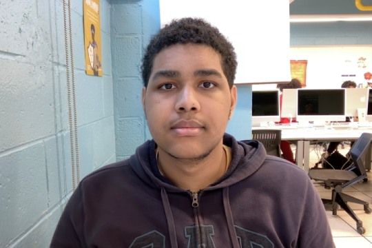

About Me
Hi! I am Omar Rosa Rodriguez. This is a brief introduction about me, including my skills and background. I was inspired by game development and design from a young age when I first played Sonic's Ultimate Genesis Collection on the Xbox 360. Playing one of Sonic's games, made me gain a spark that made me want to make games based on what I saw and convert it with real people and everything that I was in my everyday life. Thus every day I drew concepts of myself in the shoes of Sonic the Hedgehog with the people around me as important characters for my story. Time passed and I graduated and moved to new schools and that made me change the story to fit with where I'm standing on so far.
Currently, my strengths are:
- Concepting levels, characters, and the settings of the project.
- Working in a team that understands where I'm visualizing and what direction I'm heading on the project.
- Lay out the plan of how the game’s progress will go.
My weaknesses are:
- Slow progress on the work
- can be distracted by the task
Presently, I'm still in high school on my final grade before graduating and still studying the ways to become a decent developer, outside of it I'm working on a project game on Roblox so I could get a hold of what it’s like trying to do a game based off of what I saw through the media base off of sonic the hedgehog 1 and so far I'm just making the hub world for the game and so far I need a team to help me out with the layout of the levels and areas for the game. I still have my story in my head saved to be used later at the right moment to prove myself to who I am and what it takes to become a true professional game developer.
Other Stuff
This section contains other information, such as interests, hobbies, or miscellaneous content.
Hobbies and Personal Interests:
- sidescoller games
- comic novels
- sketching ideas
Hobbies and Personal Interests:
- First game ever played was sonic the hedeghog 2.
- can memorize every route in a sonic game
- express ideas of what i can think or see
Inspirations and Influences:
- [Game company Name]: Sega
- [Favorite Game Title]: Sonic Mania
- [Artist]: Yuji Naka Naoto Ohshima
- drawing
- Writing short stories
- Action RPGs
- Indie platformers
- Open-world exploration games
- Learning about advanced game development
- Building a side scroller game
- working at Sega
Vision Board
basically this is what will be from now and further on my life and who knows if myself will reach that goal
{kind=link}